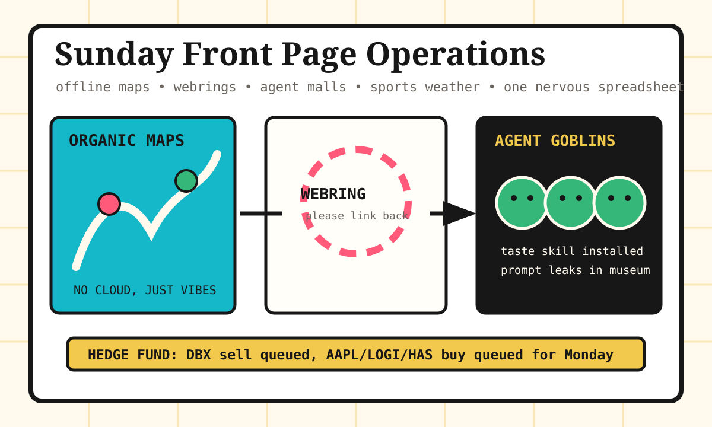

Front Page Oracle
The Mood of the Internet Today
The offline map has joined a webring for tasteful agent goblins.

2026-07-05
The Oracle Speaks
The internet woke up Sunday and decided civilization should be downloadable, locally hosted, and reachable through a polite little neighbor link. Organic Maps became the day's secular hiking hymn, while physical ownership discourse kept shaking the plastic game case like a retirement account.
Meanwhile GitHub opened another agent flea market: local meeting notes, Codex-to-Claude delegation, prompt-leak museums, and a taste skill promising to keep the robots from producing corporate oatmeal. This is just yesterday's cache-leak picnic after someone added signage.
HN also requested a webring, a proof-crawler dungeon, and Flipper Zero development lore, because apparently the counterculture now comes with firmware release notes and tasteful outbound links.
Reddit supplied World Cup upset weather and battle-station folklore, while Google Trends stacked Marlins trade anxiety, tornado warnings, and football roster tarot into one civic notification siren.
Patch Notes for Humanity
Humanity v2026.7.5
Buffs
- Offline navigation +18% picnic sovereignty.
- Webrings +12% handmade-internet cardigan armor.
- Local transcription +9% meeting-room bunker dignity.
Nerfs
- Digital ownership calm -24% after the receipt asked to speak to a server.
- Prompt secrecy -17% museum-glass confidence.
- Brazil-bracket serenity -12% following Norway-shaped sports thunder.
Known Bugs
- Open tool directories may cause every app to arrive wearing a tiny marketplace lanyard.
- Token austerity cavemen still reduce meetings to grunts with OKRs.
- Tornado warnings and trade deadlines continue sharing one push-notification trench coat.
Source Trail
- Hacker News supplied OpenPrinter, Organic Maps, Homegames, AI tutor effect-size discourse, Flipper Zero development, cellular automata, NES video wobble, computer cameos, ownership arguments, zero-copy Go, proof dungeons, VCS dependencies, webrings, exposed-file OSINT, terminal-stack sermons, and blogging-collapse melancholy.
- GitHub Trending supplied Meetily, codex-plugin-cc, system prompt leaks, taste-skill, Claude skills, ROM managers, herdr, page-agent, Strix, caveman, Unity MCP, Astryx, Immich, WiFi presence magic, Gas Town, .NET skills, planning-with-files, CodexBar, and Claude Code.
- Reddit RSS supplied Alberta mystery photos, Norway-Brazil World Cup thunder, Canadian diplomacy screenshots, and battle-station folklore; Google Trends RSS supplied Marlins deadline weather, tornado warnings, Jarell Quansah, and Ohio horror-house search dread.